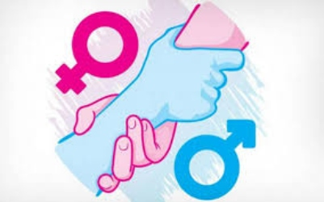
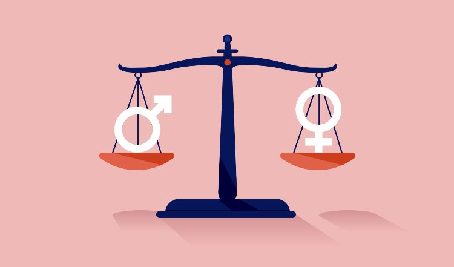
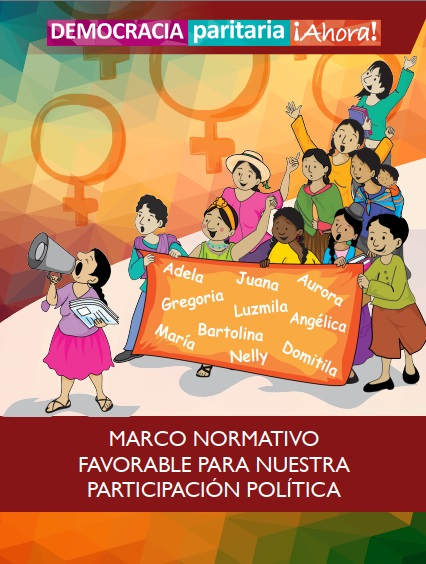
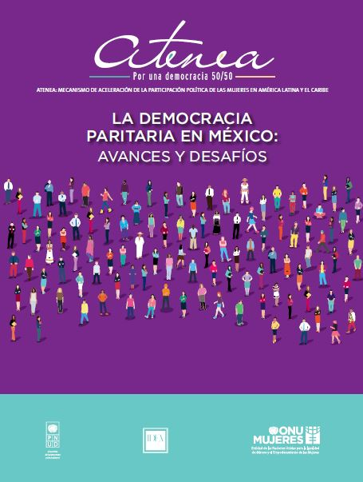

Independientemente del lugar donde vivamos, la igualdad de género es un derecho humano fundamental. Promover la igualdad de género es esencial en todos los ámbitos de una sociedad sana: desde la reducción de la pobreza hasta la promoción de la salud, la educación, la protección y el bienestar de las niñas y los niños.

La democracia es considerada como una forma de gobierno justa y conveniente para vivir en armonía. En una democracia ideal la participación de la ciudadanía es el factor que materializa los cambios, por lo que es necesario que entre gobernantes y ciudadanos establezcan un diálogo para alcanzar objetivos comunes. En ese sentido, solamente con la participación efectiva, la voluntad, así como con la sinergia entre los tres órdenes de gobierno y la sociedad la democracia se puede tornar en una realidad ideal. En México, contamos con un sistema electoral democrático, competitivo y plural. Este sistema, sustentado en el principio básico de “una persona, un voto” permite que todas y todos tengamos la misma capacidad de incidencia frente a la política y ejerzamos de esta forma un control sobre el poder del Estado. Al ser los gobiernos municipales los más cercanos a la ciudadanía, son quienes juegan un papel determinante para la alternancia política y la consolidación del ejercicio democrático.

La democracia es considerada como una forma de gobierno justa y conveniente para vivir en armonía. En una democracia ideal la participación de la ciudadanía es el factor que materializa los cambios, por lo que es necesario que entre gobernantes y ciudadanos establezcan un diálogo para alcanzar objetivos comunes. En ese sentido, solamente con la participación efectiva, la voluntad, así como con la sinergia entre los tres órdenes de gobierno y la sociedad la democracia se puede tornar en una realidad ideal. En México, contamos con un sistema electoral democrático, competitivo y plural. Este sistema, sustentado en el principio básico de “una persona, un voto” permite que todas y todos tengamos la misma capacidad de incidencia frente a la política y ejerzamos de esta forma un control sobre el poder del Estado. Al ser los gobiernos municipales los más cercanos a la ciudadanía, son quienes juegan un papel determinante para la alternancia política y la consolidación del ejercicio democrático.

Es la forma de organización social y política en la que existe igualdad de número y derechos de los distintos colectivos que componen la sociedad y que deben formar parte de los órganos decisorios y de gobierno. Históricamente las mujeres han sido apartadas de la participación social y política ya que no se las ha considerado ciudadanas de pleno derecho. En la actualidad, la mayoría de las democracias adolecen de una escasa presencia de mujeres en los poderes y órganos del Estado, por lo que dicha equiparación es considerada por determinados colectivos de mujeres un principio fundamental para la consecución de la igualdad entre mujeres y hombres.
Los primeros movimientos de mujeres se iniciaron en 1910 donde diversas asociaciones feministas se unen a Madero, entre ellas el Club Femenil Antireeleccionista “Las Hijas de Cuauhtémoc” y poco tiempo después, protestan por el fraude en las elecciones y demandan la participación política de las mujeres mexicanas. El 17 de octubre de 1953, se publicó en el Diario Oficial el nuevo texto del Artículo 34 Constitucional: “Son ciudadanos de la República los varones y las mujeres que, teniendo la calidad de mexicanos, reúnan, además, los siguientes requisitos: haber cumplido 18 años, siendo casados, o 21 sino lo son, y tener un modo honesto de vivir”. Se gana el derecho de votar y de ser candidatas en las elecciones nacionales, obteniendo el sufragio universal.
